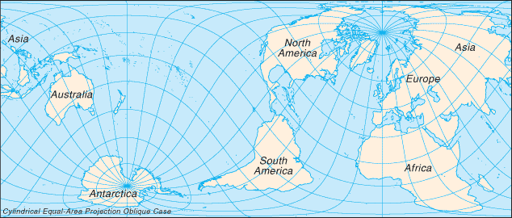

Oceans :: WORLD
Introduction :: WORLD
-
Globally, the 20th century was marked by: (a) two devastating world wars; (b) the Great Depression of the 1930s; (c) the end of vast colonial empires; (d) rapid advances in science and technology, from the first airplane flight at Kitty Hawk, North Carolina (US) to the landing on the moon; (e) the Cold War between the Western alliance and the Warsaw Pact nations; (f) a sharp rise in living standards in North America, Europe, and Japan; (g) increased concerns about environmental degradation including deforestation, energy and water shortages, declining biological diversity, and air pollution; (h) the onset of the AIDS epidemic; and (i) the ultimate emergence of the US as the only world superpower. The planet's population continues to explode: from 1 billion in 1820 to 2 billion in 1930, 3 billion in 1960, 4 billion in 1974, 5 billion in 1987, 6 billion in 1999, and 7 billion in 2012. For the 21st century, the continued exponential growth in science and technology raises both hopes (e.g., advances in medicine and agriculture) and fears (e.g., development of even more lethal weapons of war).
Geography :: WORLD
-
The surface of the earth is approximately 70.9% water and 29.1% land. The former portion is divided into large bodies termed oceans. The World Factbook recognizes and describes five oceans, which are in decreasing order of size: the Pacific Ocean, Atlantic Ocean, Indian Ocean, Southern Ocean, and Arctic Ocean. Because of their immense size, the Pacific and Atlantic Oceans are generally divided at the equator into the North and South Pacific Oceans and the North and South Atlantic Oceans, thus creating seven major water bodies - the so-called "Seven Seas."The land portion is generally divided into several, large, discrete landmasses termed continents. Depending on the convention used, the number of continents can vary from five to seven. The most common classification recognizes seven, which are (from largest to smallest): Asia, Africa, North America, South America, Antarctica, Europe, and Australia. Asia and Europe are sometimes lumped together into a Eurasian continent resulting in six continents. Alternatively, North and South America are sometimes grouped as simply the Americas, resulting in a continent total of six (or five, if the Eurasia designation is used).North America is commonly understood to include the island of Greenland, the isles of the Caribbean, and to extend south all the way to the Isthmus of Panama. The easternmost extent of Europe is generally defined as being the Ural Mountains and the Ural River; on the southeast the Caspian Sea; and on the south the Caucasus Mountains, the Black Sea, and the Mediterranean. Portions of Azerbaijan, Georgia, Kazakhstan, Russia, and Turkey fall within both Europe and Asia, but in every instance the larger section is in Asia. These countries are considered part of both continents. Armenia and Cyprus, which lie completely in Western Asia, are geopolitically European countries.Asia usually incorporates all the islands of the Philippines, Malaysia, and Indonesia. The islands of the Pacific are often lumped with Australia into a "land mass" termed Oceania or Australasia. Africa's northeast extremity is frequently delimited at the Isthmus of Suez, but for geopolitical purposes, the Egyptian Sinai Peninsula is often included as part of Africa.Although the above groupings are the most common, different continental dispositions are recognized or taught in certain parts of the world, with some arrangements more heavily based on cultural spheres rather than physical geographic considerations.Based on the seven-continent model, and grouping islands with adjacent continents, Africa has the most countries with 54. Europe contains 49 countries and Asia 48, but these two continents share five countries: Azerbaijan, Georgia, Kazakhstan, Russia, and Turkey. North America consists of 23 sovereign states, Oceania has 14, and South America 12.countries by continent: Africa (54): Algeria, Angola, Benin, Botswana, Burkina Faso, Burundi, Cabo Verde, Cameroon, Central African Republic, Chad, Comoros, Democratic Republic of the Congo, Republic of the Congo, Cote d'Ivoire, Djibouti, Egypt, Equatorial Guinea, Eritrea, Ethiopia, Gabon, The Gambia, Ghana, Guinea, Guinea-Bissau, Kenya, Lesotho, Liberia, Libya, Madagascar, Malawi, Mali, Mauritania, Mauritius, Morocco, Mozambique, Namibia, Niger, Nigeria, Rwanda, Sao Tome and Principe, Senegal, Seychelles, Sierra Leone, Somalia, South Africa, South Sudan, Sudan, Swaziland, Tanzania, Togo, Tunisia, Uganda, Zambia, ZimbabweEurope (49): Albania, Andorra, Austria, Azerbaijan*, Belarus, Belgium, Bosnia and Herzegovina, Bulgaria, Croatia, Czech Republic, Denmark, Estonia, Finland, France, Georgia*, Germany, Greece, Holy See (Vatican City), Hungary, Iceland, Ireland, Italy, Kazakhstan*, Kosovo, Latvia, Liechtenstein, Lithuania, Luxembourg, Macedonia, Malta, Moldova, Monaco, Montenegro, Netherlands, Norway, Poland, Portugal, Romania, Russia*, San Marino, Serbia, Slovakia, Slovenia, Spain, Sweden, Switzerland, Turkey*, Ukraine, United Kingdom (* indicates part of the country is also in Asia)Asia (48): Afghanistan, Armenia, Azerbaijan*, Bahrain, Bangladesh, Bhutan, Brunei, Burma, Cambodia, China, Cyprus, Georgia*, India, Indonesia, Iran, Iraq, Israel, Japan, Jordan, Kazakhstan*, North Korea, South Korea, Kuwait, Kyrgyzstan, Laos, Lebanon, Malaysia, Maldives, Mongolia, Nepal, Oman, Pakistan, Philippines, Qatar, Russia*, Saudi Arabia, Singapore, Sri Lanka, Syria, Tajikistan, Thailand, Timor-Leste, Turkey*, Turkmenistan, United Arab Emirates, Uzbekistan, Vietnam, Yemen (* indicates part of the country is also in Europe)North America (23): Antigua and Barbuda, The Bahamas, Barbados, Belize, Canada, Costa Rica, Cuba, Dominica, Dominican Republic, El Salvador, Grenada, Guatemala, Haiti, Honduras, Jamaica, Mexico, Nicaragua, Panama, Saint Kitts and Nevis, Saint Lucia, Saint Vincent and the Grenadines, Trinidad and Tobago, United StatesOceania (14): Australia, Fiji, Kiribati, Marshall Islands, Federated States of Micronesia, Nauru, New Zealand, Palau, Papua New Guinea, Samoa, Solomon Islands, Tonga, Tuvalu, VanuatuSouth America (12): Argentina, Bolivia, Brazil, Chile, Colombia, Ecuador, Guyana, Paraguay, Peru, Suriname, Uruguay, VenezuelaPhysical Map of the Worldtotal: 510.072 million sq kmland: 148.94 million sq kmwater: 361.132 million sq kmnote: 70.9% of the world's surface is water, 29.1% is landland area about 16 times the size of the UStop fifteen World Factbook entities ranked by size: Pacific Ocean 155.557 million sq km; Atlantic Ocean 76.762 million sq km; Indian Ocean 68.556 million sq km; Southern Ocean 20.327 million sq km; Russia 17,098,242 sq km; Arctic Ocean 14.056 million sq km; Antarctica 14 million sq km; Canada 9,984,670 sq km; United States 9,826,675 sq km; China 9,596,960 sq km; Brazil 8,515,770 sq km; Australia 7,741,220 sq km; European Union 4,324,782 sq km; India 3,287,263 sq km; Argentina 2,780,400 sq kmtop ten largest water bodies: Pacific Ocean 155.557 million sq km; Atlantic Ocean 76.762 million sq km; Indian Ocean 68.556 million sq km; Southern Ocean 20.327 million sq km; Arctic Ocean 14.056 million sq km; Coral Sea 4,184,100 sq km; South China Sea 3,595,900 sq km; Caribbean Sea 2.834 million sq km; Bering Sea 2.52 million sq km; Mediterranean Sea 2.469 million sq kmtop ten largest landmasses: Asia 44,568,500 sq km; Africa 30.065 million sq km; North America 24.473 million sq km; South America 17.819 million sq km; Antarctica 14 million sq km; Europe 9.948 million sq km; Australia 7,741,220 sq km; Greenland 2,166,086 sq km; New Guinea 785,753 sq km; Borneo 751,929 sq kmtop ten largest islands: Greenland 2,166,086 sq km; New Guinea (Indonesia, Papua New Guinea) 785,753 sq km; Borneo (Brunei, Indonesia, Malaysia) 751,929 sq km; Madagascar 587,713 sq km; Baffin Island (Canada) 507,451 sq km; Sumatra (Indonesia) 472,784 sq km; Honshu (Japan) 227,963 sq km; Victoria Island (Canada) 217,291 sq km; Great Britain (United Kingdom) 209,331 sq km; Ellesmere Island (Canada) 196,236 sq kmten smallest independent countries: Holy See (Vatican City) 0.44 sq km; Monaco 2 sq km; Nauru 21 sq km; Tuvalu 26 sq km; San Marino 61 sq km; Liechtenstein 160 sq km; Marshall Islands 181 sq km; Saint Kitts and Nevis 261 sq km; Maldives 298 sq km; Malta 316 sq kmthe land boundaries in the world total 251,060 km (not counting shared boundaries twice); two nations, China and Russia, each border 14 other countriesnote: 46 nations and other areas are landlocked, these include: Afghanistan, Andorra, Armenia, Austria, Azerbaijan, Belarus, Bhutan, Bolivia, Botswana, Burkina Faso, Burundi, Central African Republic, Chad, Czech Republic, Ethiopia, Holy See (Vatican City), Hungary, Kazakhstan, Kosovo, Kyrgyzstan, Laos, Lesotho, Liechtenstein, Luxembourg, Macedonia, Malawi, Mali, Moldova, Mongolia, Nepal, Niger, Paraguay, Rwanda, San Marino, Serbia, Slovakia, South Sudan, Swaziland, Switzerland, Tajikistan, Turkmenistan, Uganda, Uzbekistan, West Bank, Zambia, Zimbabwe; two of these, Liechtenstein and Uzbekistan, are doubly landlocked356,000 kmnote: 95 nations and other entities are islands that border no other countries, they include: American Samoa, Anguilla, Antigua and Barbuda, Aruba, Ashmore and Cartier Islands, The Bahamas, Bahrain, Baker Island, Barbados, Bermuda, Bouvet Island, British Indian Ocean Territory, British Virgin Islands, Cabo Verde, Cayman Islands, Christmas Island, Clipperton Island, Cocos (Keeling) Islands, Comoros, Cook Islands, Coral Sea Islands, Cuba, Curacao, Cyprus, Dominica, Falkland Islands (Islas Malvinas), Faroe Islands, Fiji, French Polynesia, French Southern and Antarctic Lands, Greenland, Grenada, Guam, Guernsey, Heard Island and McDonald Islands, Howland Island, Iceland, Isle of Man, Jamaica, Jan Mayen, Japan, Jarvis Island, Jersey, Johnston Atoll, Kingman Reef, Kiribati, Madagascar, Maldives, Malta, Marshall Islands, Mauritius, Mayotte, Federated States of Micronesia, Midway Islands, Montserrat, Nauru, Navassa Island, New Caledonia, New Zealand, Niue, Norfolk Island, Northern Mariana Islands, Palau, Palmyra Atoll, Paracel Islands, Philippines, Pitcairn Islands, Puerto Rico, Saint Barthelemy, Saint Helena, Saint Kitts and Nevis, Saint Lucia, Saint Pierre and Miquelon, Saint Vincent and the Grenadines, Samoa, Sao Tome and Principe, Seychelles, Singapore, Sint Maarten, Solomon Islands, South Georgia and the South Sandwich Islands, Spratly Islands, Sri Lanka, Svalbard, Taiwan, Tokelau, Tonga, Trinidad and Tobago, Turks and Caicos Islands, Tuvalu, Vanuatu, Virgin Islands, Wake Island, Wallis and Futunaa variety of situations exist, but in general, most countries make the following claims measured from the mean low-tide baseline as described in the 1982 UN Convention on the Law of the Sea: territorial sea - 12 nm, contiguous zone - 24 nm, and exclusive economic zone - 200 nm; additional zones provide for exploitation of continental shelf resources and an exclusive fishing zone; boundary situations with neighboring states prevent many countries from extending their fishing or economic zones to a full 200 nma wide equatorial band of hot and humid tropical climates, bordered north and south by subtropical temperate zones that separate two large areas of cold and dry polar climatestremendous variation of terrain on each of the continents; check the World 'Elevation' entry for a compilation of terrain extremesmean elevation: 840 melevation extremes: lowest point: Bentley Subglacial Trench (Antarctica) -2,555 m (in the oceanic realm, Challenger Deep in the Mariana Trench is the lowest point, lying -10,924 m below the surface of the Pacific Ocean)highest point: Mount Everest 8,850 mtop ten highest mountains (measured from sea level): Mount Everest (China-Nepal) 8,850 m; K2 (Pakistan) 8,611 m; Kanchenjunga (India-Nepal) 8,598 m; Lhotse (Nepal) 8,516 m; Makalu (China-Nepal) 8,463 m; Cho Oyu (China-Nepal) 8,201 m; Dhaulagiri (Nepal) 8,167 m; Manaslu (Nepal) 8,163 m; Nanga Parbat (Pakistan) 8,125 m; Anapurna (Nepal) 8,091 mnote: Mauna Kea (United States) is the world's tallest mountain as measured from base to summit; the peak of this volcanic colossus lies on the island of Hawaii, but its base begins more than 70 km offshore and at a depth of about 6,000 m; total height estimates range from 9,966 m to 10,203 mhighest point on each continent: Asia - Mount Everest (China-Nepal) 8,850 m; South America - Cerro Aconcagua (Argentina) 6,960 m; North America - Denali (Mount McKinley) (United States) 6,190 m; Africa - Kilimanjaro (Tanzania) 5,895 m; Europe - El'brus (Russia) 5,633 m; Antarctica - Vinson Massif 4,897 m; Australia - Mount Kosciuszko 2,229 mlowest point on each continent: Antarctica - Bentley Subglacial Trench -2,555 m; Asia - Dead Sea (Israel-Jordan) -408 m; Africa - Lac Assal (Djibouti) -155 m; South America - Laguna del Carbon (Argentina) -105 m; North America - Death Valley (United States) -86 m; Europe - Caspian Sea (Azerbaijan-Kazakhstan-Russia) -28 m; Australia - Lake Eyre -15 mthe rapid depletion of nonrenewable mineral resources, the depletion of forest areas and wetlands, the extinction of animal and plant species, and the deterioration in air and water quality pose serious long-term problems3,242,917 sq km (2012 est.)large areas subject to severe weather (tropical cyclones); natural disasters (earthquakes, landslides, tsunamis, volcanic eruptions)volcanism: volcanism is a fundamental driver and consequence of plate tectonics, the physical process reshaping the Earth's lithosphere; the world is home to more than 1,500 potentially active volcanoes, with over 500 of these having erupted in historical times; an estimated 500 million people live near these volcanoes; associated dangers include lava flows, lahars (mudflows), pyroclastic flows, ash clouds, ash fall, ballistic projectiles, gas emissions, landslides, earthquakes, and tsunamis; in the 1990s, the International Association of Volcanology and Chemistry of the Earth's Interior, created a list of 16 Decade Volcanoes worthy of special study because of their great potential for destruction: Avachinsky-Koryaksky (Russia), Colima (Mexico), Etna (Italy), Galeras (Colombia), Mauna Loa (United States), Merapi (Indonesia), Nyiragongo (Democratic Republic of the Congo), Rainier (United States), Sakurajima (Japan), Santa Maria (Guatemala), Santorini (Greece), Taal (Philippines), Teide (Spain), Ulawun (Papua New Guinea), Unzen (Japan), Vesuvius (Italy)large areas subject to overpopulation, industrial disasters, pollution (air, water, acid rain, toxic substances), loss of vegetation (overgrazing, deforestation, desertification), loss of wildlife, soil degradation, soil depletion, erosion; global warming becoming a greater concernthe world is now thought to be about 4.55 billion years old, just about one-third of the 13.8-billion-year age estimated for the universe
People and Society :: WORLD
-
7,405,107,650 (July 2017 est.)top ten most populous countries (in millions): China 1379.3; India 1281.93; United States 326.63; Indonesia 260.58; Brazil 207.35; Pakistan 204.92; Nigeria 190.63; Bangladesh 157.83; Russia 142.26; Japan 126.45ten least populous countries: Holy See (Vatican City) 1,000; Montserrat 5,292; Saint Pierre and Miquelon 5,533; Saint Barthelemy 7,184; Saint Helena, Ascension, and Tristan de Cunha 7,828; Cook Islands 9,290; Nauru 9,642; Tuvalu 11,052; Wallis and Futuna 15,714; Anguilla 17,087ten most densely populated countries (population per sq km): Macau 21,346; Monaco 15,322; Singapore 8,572; Hong Kong 6,702; Gaza Strip 4,987; Gibraltar 4,523; Bahrain 1,857; Maldives 1,318; Malta 1,317; Bermuda 1,312ten least densely populated countries (population per sq km): Greenland less than 1; Mongolia 2.0; Western Sahara 2.3; Australia 3.0; Namibia 3.0; Iceland 3.4; Mauritania 3.6; Guyana 3.7; Libya 3.8; Suriname 3.8Mandarin Chinese 12.2%, Spanish 5.8%, English 4.6%, Arabic 3.6%, Hindi 3.6%, Portuguese 2.8%, Bengali 2.6%, Russian 2.3%, Japanese 1.7%, Punjabi, Western 1.2%, Javanese 1.2% (2016 est.)note 1: percents are for "first language" speakers only; the six UN languages - Arabic, Chinese (Mandarin), English, French, Russian, and Spanish (Castilian) - are the mother tongue or second language of about half of the world's population, and are the official languages in more than half the states in the world; some 300 languages have more than a million first-language speakersnote 2: all told, there are an estimated 7,100 languages spoken in the world; approximately 80% of these languages are spoken by less than 100,000 people; about 130 languages are spoken by less than 10 people; communities that are isolated from each other in mountainous regions often develop multiple languages; Papua New Guinea, for example, boasts about 840 separate languagesnote 3: approximately 2,300 languages are spoken in Asia, 2,140, in Africa, 1,310 in the Pacific, 1,060 in the Americas, and 290 in Europe (2016)Christian 31.4%, Muslim 23.2%, Hindu 15%, Buddhist 7.1%, folk religions 5.9%, Jewish 0.2%, other 0.8%, unaffiliated 16.4% (2010 est.)0-14 years: 25.44% (male 963,981,944/female 898,974,458)15-24 years: 16.16% (male 611,311,930/female 572,229,547)25-54 years: 41.12% (male 1,522,999,578/female 1,488,011,505)55-64 years: 8.6% (male 307,262,939/female 322,668,546)65 years and over: 8.68% (male 283,540,918/female 352,206,092) (2017 est.)total dependency ratio: 52.5youth dependency ratio: 39.9elderly dependency ratio: 12.6potential support ratio: 7.9 (2015 est.)total: 30.4 yearsmale: 29.6 yearsfemale: 31.1 years (2017 est.)1.06%note: this rate results in about 148 net additions to the worldwide population every minute or 2.5 every second (2016 est.)18.5 births/1,000 populationnote: this rate results in about 258 worldwide births per minute or 4.3 births every second (2016 est.)7.8 deaths/1,000 populationnote: this rate results in about 108 worldwide deaths per minute or 1.8 deaths every second (2016 est.)urban population: 54.9% of total population (2017)rate of urbanization: 1.84% annual rate of change (2015-20 est.)ten largest urban agglomerations: Tokyo (Japan) - 38,241,000; New Delhi (India) - 27,197,000; Shanghai (China) - 25,202,000; Beijing (China) - 22,063,000; Mumbai (India) - 21,690,000; Sao Paulo (Brazil) - 21,519,000; Mexico City (Mexico) - 21,321,000; Osaka (Japan) - 20,415,000; Cairo (Egypt) - 19,486,000; Dhaka (Bangladesh) - 18,898,000 (2017)at birth: 1.03 male(s)/female0-14 years: 1.07 male(s)/female15-24 years: 1.07 male(s)/female25-54 years: 1.02 male(s)/female55-64 years: 0.95 male(s)/female65 years and over: 0.81 male(s)/femaletotal population: 1.02 male(s)/female (2016 est.)216 deaths/100,000 live births (2015 est.)total: 34.1 deaths/1,000 live birthsmale: 36.1 deaths/1,000 live birthsfemale: 32.1 deaths/1,000 live births (2016 est.)total population: 69 yearsmale: 67 yearsfemale: 71.1 years (2017 est.)2.42 children born/woman (2016 est.)improved:urban: 96.5% of populationrural: 84.7% of populationtotal: 91.1% of populationunimproved:urban: 3.5% of populationrural: 15.3% of populationtotal: 8.9% of population (2015 est.)improved:urban: 82.3% of populationrural: 50.5% of populationtotal: 67.7% of populationunimproved:urban: 17.7% of populationrural: 49.5% of populationtotal: 32.3% of population (2015 est.)0.8% (2016 est.)36.7 million (2016 est.)1 million (2016 est.)definition: age 15 and over can read and writetotal population: 86.2%male: 89.8%female: 82.6% (2016 est.)note: more than three-quarters of the world's 758 million illiterate adults are found in South Asia and sub-Saharan Africa; of all the illiterate adults in the world, almost two-thirds are women (2014)total: 12 yearsmale: 12 yearsfemale: 12 years (2014)
Government :: WORLD
-
195 countries, 72 dependent areas and other entitiesthe legal systems of nearly all countries are generally modeled upon elements of five main types: civil law (including French law, the Napoleonic Code, Roman law, Roman-Dutch law, and Spanish law); common law (including English and US law); customary law; mixed or pluralistic law; and religious law (including Islamic law); an additional type of legal system - international law - governs the conduct of independent nations in their relationships with one anotherall members of the UN are parties to the statute that established the International Court of Justice (ICJ) or World Court; 61 countries have accepted jurisdiction of the ICJ as compulsory with reservations and 11 countries have accepted ICJ jurisdiction as compulsory without reservations; states parties to the Rome Statute of the International Criminal Court (ICCt) are those countries that have ratified or acceded to the Rome Statute, the treaty that established the Court; a total of 124 (as of 2 December 2016) countries have accepted jurisdiction of the ICCt (see Appendix B for a clarification on the differing mandates of the ICJ and ICCt)note: the flags of 12 nations: Austria, Botswana, Georgia, Jamaica, Japan, Laos, Latvia, Macedonia, Micronesia, Nigeria, Switzerland, and Thailand have no top or bottom and may be flown with either long edge on top without any notice being taken
Economy :: WORLD
-
The international financial crisis of 2008-09 led to the first downturn in global output since 1946 and presented the world with a major new challenge: determining what mix of fiscal and monetary policies to follow to restore growth and jobs, while keeping inflation and debt under control. Financial stabilization and stimulus programs that started in 2009-11, combined with lower tax revenues in 2009-10, required most countries to run large budget deficits. Treasuries issued new public debt - totaling $9.1 trillion since 2008 - to pay for the additional expenditures. To keep interest rates low, most central banks monetized that debt, injecting large sums of money into their economies - between December 2008 and December 2013 the global money supply increased by more than 35%. Governments are now faced with the difficult task of spurring current growth and employment without saddling their economies with so much debt that they sacrifice long-term growth and financial stability. When economic activity picks up, central banks will confront the difficult task of containing inflation without raising interest rates so high they snuff out further growth.Fiscal and monetary data for 2013 are currently available for 180 countries, which together account for 98.5% of world GDP. Of the 180 countries, 82 pursued unequivocally expansionary policies, boosting government spending while also expanding their money supply relatively rapidly - faster than the world average of 3.1%; 28 followed restrictive fiscal and monetary policies, reducing government spending and holding money growth to less than the 3.1% average; and the remaining 70 followed a mix of counterbalancing fiscal and monetary policies, either reducing government spending while accelerating money growth, or boosting spending while curtailing money growth.(For more information, see attached spreadsheet, Fiscal and Monetary Data, 2008-2012.)In 2013, for many countries the drive for fiscal austerity that began in 2011 abated. While 5 out of 6 countries slowed spending in 2012, only 1 in 2 countries slowed spending in 2013. About 1 in 3 countries actually lowered the level of their expenditures. The global growth rate for government expenditures increased from 1.6% in 2012 to 5.1% in 2013, after falling from a 10.1% growth rate in 2011. On the other hand, nearly 2 out of 3 central banks tightened monetary policy in 2013, decelerating the rate of growth of their money supply, compared with only 1 out of 3 in 2012. Roughly 1 of 4 central banks actually withdrew money from circulation, an increase from 1 out of 7 in 2012. Growth of the global money supply, as measured by the narrowly defined M1, slowed from 8.7% in 2009 and 10.4% in 2010 to 5.2% in 2011, 4.6% in 2012, and 3.1% in 2013. Several notable shifts occurred in 2013. By cutting government expenditures and expanding money supplies, the US and Canada moved against the trend in the rest of the world. France reversed course completely. Rather than reducing expenditures and money as it had in 2012, it expanded both. Germany reversed its fiscal policy, sharply expanding federal spending, while continuing to grow the money supply. South Korea shifted monetary policy into high gear, while maintaining a strongly expansionary fiscal policy. Japan, however, continued to pursue austere fiscal and monetary policies.Austere economic policies have significantly affected economic performance. The global budget deficit narrowed to roughly $2.7 trillion in 2012 and $2.1 trillion in 2013, or 3.8% and 2.5% of World GDP, respectively. But growth of the world economy slipped from 5.1% in 2010 and 3.7% in 2011, to just 3.1% in 2012, and 2.9% in 2013.Countries with expansionary fiscal and monetary policies achieved significantly higher rates of growth, higher growth of tax revenues, and greater success reducing the public debt burden than those countries that chose contractionary policies. In 2013, the 82 countries that followed a pro-growth approach achieved a median GDP growth rate of 4.7%, compared to 1.7% for the 28 countries with restrictive fiscal and monetary policies, a difference of 3 percentage points. Among the 82, China grew 7.7%, Philippines 6.8%, Malaysia 4.7%, Pakistan and Saudi Arabia 3.6%, Argentina 3.5%, South Korea 2.8%, and Russia 1.3%, while among the 28, Brazil grew 2.3%, Japan 2.0%, South Africa 2.0%, Netherlands -0.8%, Croatia -1.0%, Iran -1.5%, Portugal -1.8%, Greece -3.8%, and Cyprus -8.7%.Faster GDP growth and lower unemployment rates translated into increased tax revenues and a less cumbersome debt burden. Revenues for the 82 expansionary countries grew at a median rate of 10.7%, whereas tax revenues fell at a median rate of 6.8% for the 28 countries that chose austere economic policies. Budget balances improved for about three-quarters of the 28, but, for most, debt grew faster than GDP, and the median level of their public debt as a share of GDP increased 9.1 percentage points, to 59.2%. On the other hand, budget balances deteriorated for most of the 82 pro-growth countries, but GDP growth outpaced increases in debt, and the median level of public debt as a share of GDP increased just 1.9%, to 39.8%.The world recession has suppressed inflation rates - world inflation declined 1.0 percentage point in 2012 to about 4.1% and 0.2 percentage point to 3.9% in 2013. In 2013 the median inflation rate for the 82 pro-growth countries was 1.3 percentage points higher than that for the countries that followed more austere fiscal and monetary policies. Overall, the latter countries also improved their current account balances by shedding imports; as a result, current account balances deteriorated for most of the countries that pursued pro-growth policies. Slow growth of world income continued to hold import demand in check and crude oil prices fell. Consequently, the dollar value of world trade grew just 1.3% in 2013.Beyond the current global slowdown, the world faces several long standing economic challenges. The addition of 80 million people each year to an already overcrowded globe is exacerbating the problems of pollution, waste-disposal, epidemics, water-shortages, famine, over-fishing of oceans, deforestation, desertification, and depletion of non-renewable resources. The nation-state, as a bedrock economic-political institution, is steadily losing control over international flows of people, goods, services, funds, and technology. The introduction of the euro as the common currency of much of Western Europe in January 1999, while paving the way for an integrated economic powerhouse, has created economic risks because the participating nations have varying income levels and growth rates, and hence, require a different mix of monetary and fiscal policies. Governments, especially in Western Europe, face the difficult political problem of channeling resources away from welfare programs in order to increase investment and strengthen incentives to seek employment. Because of their own internal problems and priorities, the industrialized countries are unable to devote sufficient resources to deal effectively with the poorer areas of the world, which, at least from an economic point of view, are becoming further marginalized. The terrorist attacks on the US on 11 September 2001 accentuated a growing risk to global prosperity - the diversion of resources away from capital investments to counter-terrorism programs.Despite these vexing problems, the world economy also shows great promise. Technology has made possible further advances in a wide range of fields, from agriculture, to medicine, alternative energy, metallurgy, and transportation. Improved global communications have greatly reduced the costs of international trade, helping the world gain from the international division of labor, raise living standards, and reduce income disparities among nations. Much of the resilience of the world economy in the aftermath of the financial crisis resulted from government and central bank leaders around the globe working in concert to stem the financial onslaught, knowing well the lessons of past economic failures.$120.2 trillion (2016 est.)$116.7 trillion (2015 est.)$113.1 trillion (2014 est.)note: data are in 2016 dollarsSGWP (gross world product): $75.52 trillion (2016 est.)3% (2016 est.)3.2% (2015 est.)3.3% (2014 est.)$16,400 (2016 est.)$16,100 (2015 est.)$15,900 (2014 est.)note: data are in 2016 dollars26.6% of GDP (2016 est.)27% of GDP (2015 est.)27.4% of GDP (2014 est.)household consumption: 56.8%government consumption: 16.3%investment in fixed capital: 25.4%investment in inventories: 1%exports of goods and services: 28%imports of goods and services: -27.4% (2016 est.)agriculture: 6.4%industry: 29.9%services: 63% (2016 est.)dominated by the onrush of technology, especially in computers, robotics, telecommunications, and medicines and medical equipment; most of these advances take place in OECD nations; only a small portion of non-OECD countries have succeeded in rapidly adjusting to these technological forces; the accelerated development of new technologies is complicating already grim environmental problems2.4% (2016 est.)3.41 billion (2016 est.)agriculture: 31.5%industry: 23.5%services: 45% (2013)7.8% (2016 est.)7.7% (2015 est.)note: 30% combined unemployment and underemployment in many non-industrialized countries; developed countries typically 4%-12% unemployment (2007 est.)lowest 10%: 2.6%highest 10%: 30.2% (2007.75 est.)37.9 (2012 est.)37.9 (2005 est.)revenues: $20.35 trillionexpenditures: $22.74 trillion (2016 est.)26.9% of GDP (2016 est.)-3.2% of GDP (2016 est.)59.4% of GDP (2016 est.)58.2% of GDP (2015 est.)world average: 4.6% (2016 est.) 3.6% (2015 est.)developed countries: 0.9% (2016 est.) 0.2% (2015 est.)developing countries: 6.6% (2016 est.) 4% (2015 est.)note: the above estimates are weighted averages; inflation in developed countries is 0% to 4% typically, in developing countries, 4% to 10% typically; national inflation rates vary widely in individual cases; inflation rates have declined for most countries for the last several years, held in check by increasing international competition from several low wage countries and by soft demand due to the world financial crisis$30.14 trillion (31 December 2016 est.)$27.84 trillion (31 December 2015 est.)$79.59 trillion (31 December 2016 est.)$76.53 trillion (31 December 2015 est.)$101 trillion (31 December 2016 est.)$95.25 trillion (31 December 2015 est.)$66.79 trillion (31 December 2015 est.)$67.47 trillion (31 December 2014 est.)$67.16 trillion (31 December 2013 est.)$15.84 trillion (2016 est.)$16.31 trillion (2015 est.)the whole range of industrial and agricultural goods and servicestop ten - share of world trade: electrical machinery, including computers 14.8%; mineral fuels, including oil, coal, gas, and refined products 14.4%; nuclear reactors, boilers, and parts 14.2%; cars, trucks, and buses 8.9%; scientific and precision instruments 3.5%; plastics 3.4%; iron and steel 2.7%; organic chemicals 2.6%; pharmaceutical products 2.6%; diamonds, pearls, and precious stones 1.9% (2007 est.)$15.39 trillion (2016 est.)$15.83 trillion (2015 est.)the whole range of industrial and agricultural goods and servicestop ten - share of world trade: see listing for exports$75.9 trillion (31 December 2016 est.)$74.88 trillion (31 December 2015 est.)note: this figure is the sum total of all countries' external debt, both public and private$31.69 trillion (31 December 2016 est.)$30.3 trillion (31 December 2015 est.)$33.04 trillion (31 December 2016 est.)$31.95 trillion (31 December 2015 est.)
Energy :: WORLD
-
population without electricity: 1,201,000,000electrification - total population: 83%electrification - urban areas: 95%electrification - rural areas: 70% (2013)23.14 trillion kWh (2014 est.)21.36 trillion kWh (2014 est.)624 billion kWh (2014 est.)679.2 billion kWh (2014 est.)6.301 billion kW (2014 est.)64.2% of total installed capacity (2012 est.)6.8% of total installed capacity (2012 est.)18.4% of total installed capacity (2012 est.)10.5% of total installed capacity (2012 est.)81.8 million bbl/day (2015 est.)46.6 million bbl/day (2013 est.)47.38 million bbl/day (2013 est.)1.665 trillion bbl (1 January 2016 es)87.69 million bbl/day (2013 est.)92.79 million bbl/day (2014 est.)27.74 million bbl/day (2013 est.)26.14 million bbl/day (2013 est.)3.544 trillion cu m (2014 est.)3.56 trillion cu m (2014 est.)1.157 trillion cu m (2013 est.)1.472 trillion cu m (2013 est.)193.9 trillion cu m (1 January 2016 es)33.13 billion Mt (2013 est.)
Communications :: WORLD
-
1 billion (July 2016 est.)total 7.1 billion (July 2016 est.)3.174 billiontop ten countries by Internet usage (in millions): China 730.7; India 374.3; United States 246.8; Brazil 122.8; Japan 116.6; Russia 108.8; Mexico 73.3; Germany 72.3; Indonesia 65.5; United Kingdom 61 (July 2016 est.)
Transportation :: WORLD
-
total airports - 41,820 (2016)top ten by passengers: Atlanta (ATL) - 104,171,935; Beijing (PEK) - 94,393,454; Dubai (DXB) - 83,654,250; Los Angeles (LAX) - 80,921,527; Tokyo (HND) - 79,699,762; Chicago (ORD) - 77,960,588; London (LHR) - 75,715,474; Hong Kong (HKG) 70,305,857; Shanghai (PVG) 66, 002,414; Paris (CDG) - 65,933,145 (2016)top ten by cargo (metric tons): Hong Kong (HKG) - 4,615,241; Memphis, TN (MEM) - 4,322,071; Shanghai (PVG) - 3,440,280; Incheon (ICN) - 2,714,341; Dubai (DXB) - 2,592,454; Anchorage, AK (ANC) - 2,542,526; Louisville, KY (SDF) - 2,437,010; Tokyo (NRT) - 2,165427; Paris (CDG) - 2,135,172; Frankfurt (FRA) - 2,113,594 (2016)6,524 (2013)total: 1,148,186 km (2013)total: 64,285,009 km (2013)2,293,412 kmtop ten longest rivers: Nile (Africa) 6,693 km; Amazon (South America) 6,436 km; Mississippi-Missouri (North America) 6,238 km; Yenisey-Angara (Asia) 5,981 km; Ob-Irtysh (Asia) 5,569 km; Yangtze (Asia) 5,525 km; Yellow (Asia) 4,671 km; Amur (Asia) 4,352 km; Lena (Asia) 4,345 km; Congo (Africa) 4,344 kmnote: rivers are not necessarily navigable along the entire length; if measured by volume, the Amazon is the largest river in the worldtop ten largest natural lakes (by surface area): Caspian Sea (Azerbaijan, Iran, Kazakhstan, Russia, Turkmenistan) 372,960 sq km; Lake Superior (Canada, United States) 82,414 sq km; Lake Victoria (Kenya, Tanzania, Uganda) 69,490 sq km; Lake Huron (Canada, United States) 59,596 sq km; Lake Michigan (United States) 57,441 sq km; Lake Tanganyika (Burundi, Democratic Republic of the Congo, Tanzania, Zambia) 32,890 sq km; Great Bear Lake (Canada) 31,800 sq km; Lake Baikal (Russia) 31,494 sq km; Lake Nyasa (Malawi, Mozambique, Tanzania) 30,044 sq km; Great Slave Lake (Canada) 28,400 sq kmnote 1: the areas of the lakes are subject to seasonal variation; only the Caspian Sea is saline, the rest are fresh waternote 2: Lakes Huron and Michigan are technically a single lake because the flow of water between the Straits of Mackinac that connects the two lakes keeps their water levels at near-equilibrium; combined, Lake Huron-Michigan is the largest freshwater lake by surface area in the world (2017)top twenty container ports as measured by Twenty-Foot Equivalent Units (TEUs) throughput: Shanghai (China) - 36,516,000; Singapore (Singapore) - 30,922,000; Shenzhen (China) - 24,142,000; Ningbo (China) - 20,636,000; Hong Kong (China) - 20,073,000; Busan (South Korea) - 19,469,000; Qingdao (China) - 17,323,000; Guangzhou (China) - 17,097,000; Dubai (UAE) - 15,585,000; - Tianjin (China) - 13,881,000; Rotterdam (Netherlands) - 12,235,000; Port Kelang (Malaysia) - 11,887,000; Kaohsiung (Taiwan) - 10,264,000; Antwerp (Belgium) - 9,654,000; Dalian (China) - 9,591,000; Xiamen (China) - 9,215,000; Hamburg (Germany) - 8,821,000; Tanjung Pelepas (Malaysia) - 8,797,000; Los Angeles (US) - 8,160,000; Long Beach (US) - 7,192,000 (2015)
Military and Security :: WORLD
-
2.22% of GDP (2016)2.27% of GDP (2015)2.26% of GDP (2014)2.3% of GDP (2013)2.36% of GDP (2012)the International Maritime Bureau (IMB) reports that 2016 saw a continued decrease in global pirate activities; in 2016, pirates attacked a total of 191 ships world-wide including boarding 150 ships, hijacking seven ships, and firing on 12; this activity is down from 246 incidents in 2015; in 2016, the number of hostages dropped to 151, however, the number of seafarers kidnapped for ransom increased dramatically to 62 with over half taken off West Africa;the first half of 2017 saw 87 incidents compared with 97 during the same time period in 2016; during this six-month period, 63 ships were boarded, 12 fired upon, and four hijacked, resulting in 63 crew members taken hostage, 41 kidnapped for ransom, three injured, and two killed; the Horn of Africa continued to see pirate activities with nine incidents in the first half of 2017, a slight increase over 2016; the decrease in successful pirate attacks off the Horn of Africa was due, in part, to anti-piracy operations by international naval forces, the hardening of vessels, and the increased use of armed security teams aboard merchant ships; despite these preventative measures, the assessed risk remains high;Operation Ocean Shield, the NATO naval task force established in 2009 to combat Somali piracy, concluded its operations in December 2016 as a result of the drop in reported incidents over the last few years; the EU naval mission continues its operatons in the Gulf of Aden and Indian Ocean; West African piracy is a growing threat with 36 attacks in 2016 compared to 14 in 2015; Nigerian pirates are very aggressive, operating as far as 200 nm offshore and linked with at least three hijackings that occurred in this area; attacks in South Asian waters remain at low levels with a decrease in Bangladesh from 11 incidents in 2015 to three in 2016; Peru reported 11 incidents, up from none in 2015; attacks in Viet Nam declined from 15 in 2015 to seven in 2016
Transnational Issues :: WORLD
-
stretching over 250,000 km, the world's 325 international land boundaries separate 195 independent states and 71 dependencies, areas of special sovereignty, and other miscellaneous entities; ethnicity, culture, race, religion, and language have divided states into separate political entities as much as history, physical terrain, political fiat, or conquest, resulting in sometimes arbitrary and imposed boundaries; most maritime states have claimed limits that include territorial seas and exclusive economic zones; overlapping limits due to adjacent or opposite coasts create the potential for 430 bilateral maritime boundaries of which 209 have agreements that include contiguous and non-contiguous segments; boundary, borderland/resource, and territorial disputes vary in intensity from managed or dormant to violent or militarized; undemarcated, indefinite, porous, and unmanaged boundaries tend to encourage illegal cross-border activities, uncontrolled migration, and confrontation; territorial disputes may evolve from historical and/or cultural claims, or they may be brought on by resource competition; ethnic and cultural clashes continue to be responsible for much of the territorial fragmentation and internal displacement of the estimated 20.8 million people and cross-border displacements of approximately 12.1 million refugees and asylum seekers around the world as of mid-2013; over half a million refugees were repatriated during 2012; other sources of contention include access to water and mineral (especially hydrocarbon) resources, fisheries, and arable land; armed conflict prevails not so much between the uniformed armed forces of independent states as between stateless armed entities that detract from the sustenance and welfare of local populations, leaving the community of nations to cope with resultant refugees, hunger, disease, impoverishment, and environmental degradationthe UN High Commissioner for Refugees (UNHCR) estimated that as of the end of 2016 there were 65.6 million people forcibly displaced worldwide, the highest level ever recorded; this includes 22.5 million refugees, 2.8 million asylum seekers, and 40.3 million conflict IDPs; the UNHCR estimates there are currently at least 10 million stateless persons (2016)current situation: the International Labour Organization conservatively estimated that 20.9 million people in 2012 were victims of forced labor, representing the full range of human trafficking (also referred to as “modern-day slavery”) for labor and sexual exploitation; about one-third of reported cases involved crossing international borders, which is often associated with sexual exploitation; trafficking in persons is most prevalent in southeastern Europe, Eurasia, and Africa and least frequent in EU member states, Canada, the US, and other developed countries (2012)Tier 2 Watch List: countries that do not fully comply with the minimum standards for the elimination of trafficking but are making significant efforts to do so; (44 countries) Antigua and Barbuda, Bolivia, Botswana, Bulgaria, Burkina Faso, Burma, Cambodia, China, Democratic Republic of the Congo, Republic of the Congo, Costa Rica, Cuba, Djibouti, Egypt, Gabon, Ghana, Guinea, Guyana, Haiti, Jamaica, Laos, Lebanon, Lesotho, Malaysia, Maldives, Mali, Mauritius, Namibia, Pakistan, Papua New Guinea, Qatar, Saudi Arabia, Saint Vincent and the Grenadines, Solomon Islands, Sri Lanka, Sudan, Suriname, Tanzania, Timor-Leste, Trinidad and Tobago, Tunisia, Turkmenistan, Ukraine, UzbekistanTier 3: countries that neither satisfy the minimum standards for the elimination of trafficking nor demonstrate a significant effort to do so; (23 countries) Algeria, Belarus, Belize, Burundi, Central African Republic, Comoros, Equatorial Guinea, Eritrea, The Gambia, Guinea-Bissau, Iran, North Korea, Kuwait, Libya, Marshall Islands, Mauritania, Russia, South Sudan, Syria, Thailand, Venezuela, Yemen, Zimbabwe (2015)cocaine: worldwide coca leaf cultivation in 2013 likely amounted to 165,000 hectares, assuming a stable crop in Bolivia; Colombia produced slightly less than half of the worldwide crop, followed by Peru and Bolivia; potential pure cocaine production increased 7% to 640 metric tons in 2013; Colombia conducts an aggressive coca eradication campaign, Peru has increased its eradication efforts, but remains hesitant to eradicate coca in key growing areasopiates: worldwide illicit opium poppy cultivation increased in 2013, with potential opium production reaching 6,800 metric tons; Afghanistan is world's primary opium producer, accounting for 82% of the global supply; Southeast Asia was responsible for 12% of global opium; Pakistan produced 3% of global opium; Latin America produced 4% of global opium, and most was refined into heroin destined for the US market (2015)